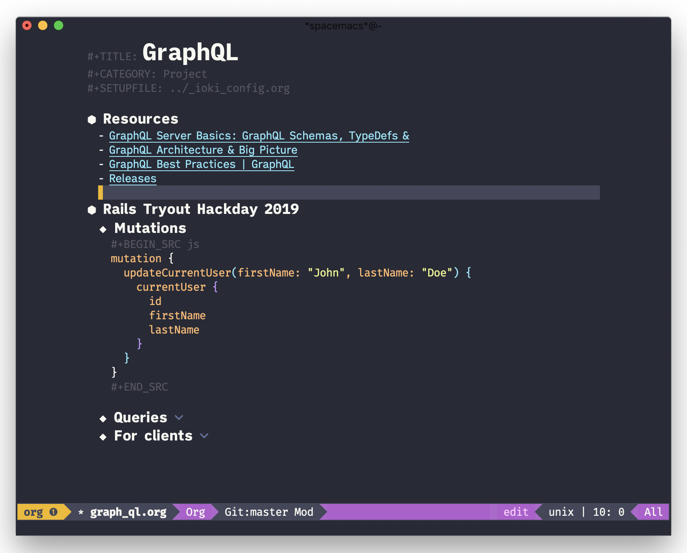
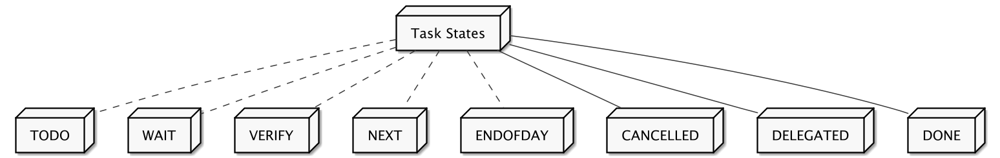
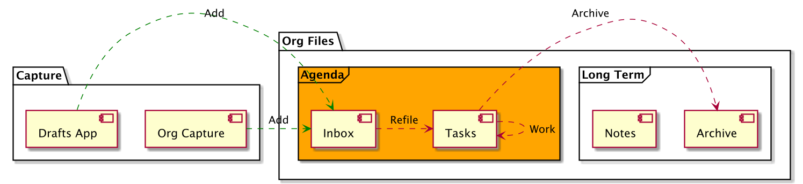

Org mode configuration
Table of Contents
This is an approach to put my whole Org mode configuration into one .org file.

1 Task States
Right now, all my TODO-related files include the same task states, defined in a common setup file.

1.1 Logging Task State change
Changes to task states might get logged, especially for recurring routines. If so, log them in a drawer, not the content of the note.
(setq org-log-state-notes-into-drawer t)
2 Environment
The directory that contains the .org files is not only synced by a cloud service across devices, it is also a git repository that auto-commits on every save of a buffer. This is activated by a .dir_locals.el file with the following content:
((nil . ((eval git-auto-commit-mode 1))))
3 Initialization
This enables buffer face mode for the Org agenda views.
While Org mode needs a lot of custom styling to work in variable-pitch-mode I take the easy way out in the agenda view by choosing the monospaced version of the font: iA Writer Mono S. It is way easier to align the ASCII tables of agenda with a font with a fixed pitch.
(defun my-org-config/setup-buffer-face () (setq buffer-face-mode-face '(:family "iA Writer Mono S")) (buffer-face-mode) ) (add-hook 'org-agenda-mode-hook 'my-org-config/setup-buffer-face)
Once Org mode loaded, turn on olivetti, hide tilde fringes and enable visual line mode.
(defun my-org-config/after-org-mode-load () (visual-line-mode) (vi-tilde-fringe-mode -1) (require 'org-indent) (org-indent-mode) (set-face-attribute 'org-indent nil :inherit '(org-hide fixed-pitch)) (variable-pitch-mode 1) ;; (turn-on-olivetti-mode) ;; (with-eval-after-load 'olivetti ;; (olivetti-set-width 81) ;; (olivetti-mode 1)) ) (add-hook 'org-mode-hook 'my-org-config/after-org-mode-load)
Save all Org buffers after archiving, as this will trigger the auto-commit of the git repo the Org files live in.
(defun my-org-config/after-org-archive () (org-save-all-org-buffers)) (add-hook 'org-archive-hook 'my-org-config/after-org-archive)
Within a recurring task, reset contained check boxes when task is done if RESET_CHECK_BOXES property is set to t.
(require 'org-checklist)
4 Quick Access
Quick access to my most important org functions is given by opening the menu SPC o.
It is not really needed/working to declare this prefix, as the prefix o is reserved for user bindings anyways.
(spacemacs/declare-prefix "o" "org mode")
You can view my daily agenda with SPC o d.
(defun my-org-daily-agenda () (interactive) (org-agenda nil "d") ) (spacemacs/set-leader-keys "od" 'my-org-daily-agenda)
Add a new todo with preselected template with SPC o t.
(defun my-org-add-todo () (interactive) (org-capture nil "t") ) (spacemacs/set-leader-keys "ot" 'my-org-add-todo)
Call org-capture with SPC o c.
(spacemacs/set-leader-keys "oc" 'org-capture)
Call org-agenda with SPC o a.
(spacemacs/set-leader-keys "oa" 'org-agenda)
Call org-store-link with SPC o l.
(spacemacs/set-leader-keys "ol" 'org-store-link)
Experimental: Open a mini buffer to search through all org file names.
Not sure how much sense this makes, as I want the selected file to be opened in the proper perspective. Also, maybe org-rifle makes more sense?
(defun my-org-helm-find-file () (interactive) (helm-browse-project-find-files "/Users/fabrik42/org") ) (spacemacs/set-leader-keys "of" 'my-org-helm-find-file)
5 Files

I use a general inbox file to collect all new tasks on the run and will batch-schedule/refile them a couple times a day.
Inbox and mobile inbox co-exist to prevent sync conflicts when adding tasks while having no internet connection. This works pretty well and I treat them equally in the agenda views.
(defvar org-my-inbox-file "~/org/inbox.org") (defvar org-my-mobile-inbox-file "~/org/inbox_mobile.org")
Default note file, that will also be used for capturing new notes.
(setq org-default-notes-file org-my-inbox-file)
Work-related tasks and notes.
(defvar org-my-general-files "~/org")
Private tasks and notes.
(defvar org-my-projects-dir "~/org/projects")
The files to be used for agenda display. This contains:
- Task inbox file
- Mobile task inbox file
- Work tasks file
Note: Right now, I would like to have TODOs in my project files as well. However, this does not play well with beorg, as the app only allows one org directory without subfolders. :(
(add-to-list 'org-agenda-files org-my-general-files) (add-to-list 'org-agenda-files org-my-projects-dir)
Refile targets are all agenda files, plus my project files. I fine-tune the considered headings to prevent human error when choosing the new location.
(setq org-refile-targets (quote ( (org-agenda-files :maxlevel . 2) )))
6 Capture
Store new notes at the beginning of a file or entry.
(setq org-reverse-note-order t)
These are my custom capture templates.
(setq org-capture-templates '(("t" "Todo [inbox]" entry (file "~/org/inbox.org") "* TODO %?\n:PROPERTIES:\n:CREATED: %U\n:END:\n %i\n") ("d" "Todo w/date [inbox]" entry (file "~/org/inbox.org") "* TODO %? %<%Y-%m-%d>\n:PROPERTIES:\n:CREATED: %U\n:END:\n %i\n") ("l" "Link currently stored [inbox]" entry (file "~/org/inbox.org") "* TODO %i%?\n:PROPERTIES:\n:CREATED: %U\n:END:\n\%A\n%i\n") ("m" "Meeting [inbox]" entry (file "~/org/inbox.org") "* Meeting %<%Y-%m-%d>: %^{prompt}\n:PROPERTIES:\n:CREATED: %U\n:END:\n- [ ] %?\n\n")))
7 Agenda
Enable org-super-agenda mode.
(org-super-agenda-mode)
Disable the super agenda header map.
(setq org-super-agenda-header-map nil)
Show warnings for deadlines 7 days in advance.
(setq org-deadline-warning-days 7)
Use a straight line as separator for between agenda blocks. See Unicode/UTF-8-character table.
(setq org-agenda-block-separator 9472)
Don't show scheduled items in agenda when they are in a DONE state.
(setq org-agenda-skip-scheduled-if-done t)
Agenda view starts today and +7 days.
(setq org-agenda-start-on-weekday nil)
7.1 Custom Agenda Views
Custom agenda commands used to generate my agenda views.
Experimental: New and better agenda views, powered by org-super-agenda.
((agenda "" ((org-agenda-span 'day) (org-agenda-compact-blocks t) ;; (org-agenda-deadline-leaders) ;; (org-agenda-scheduled-leaders) (org-agenda-prefix-format '( (agenda . " %?-12t") )) (org-super-agenda-groups '( (:name "⏰ Calendar" :time-grid t) (:name "Optional" :priority "C" :order 90) (:name "⚠ Overdue!" :deadline past) (:name "⚠ Overdue!" :scheduled past) ;; Discard full-day events from agenda (:discard (:category "Cal")) (:name "⭐ Next" :todo "NEXT") (:name "⭐ Important" :priority "A") (:name "📌 Routines" :category "Routines") (:auto-category t) )) )) (alltodo "" ((org-agenda-overriding-header "") (org-agenda-prefix-format '( (todo . " ") )) (org-super-agenda-groups '( (:name "Inbox" :tag "inbox") (:name "Verify" :todo "VERIFY") (:discard (:anything t)) ) ))))
This used to be my main agenda view for my work at ioki.
I switched between:
- Viewing only the current day for focus on today's tasks
- Viewing all week for scheduling tasks
- Enabling
Log modeto view recently completed tasks (today and yesterday)
((agenda "" ( (org-agenda-overriding-header "THIS WEEK") (org-agenda-span 'day) (org-agenda-scheduled-leaders '(" " "%2dx")) )) (tags "+inbox" ((org-agenda-overriding-header "INBOX: Entries to refile"))) (todo "VERIFY" ((org-agenda-overriding-header "FINAL VERIFICATION PENDING"))) )
This view is used by me whenever I clean up my Org files. It lists completed tasks that I can archive then, as well tasks then are uncomplete, but without a scheduled date.
I don't use it that often as I should, as I still have no satisfying way of batch-archiving entries.
( (todo "DONE" ( (org-agenda-overriding-header "DONE!") )) (todo "CANCELLED" ((org-agenda-overriding-header "CANCELLED"))) (todo "TODO" ((org-agenda-overriding-header "TODO Items (without time attached)") (org-agenda-skip-function '(org-agenda-skip-entry-if 'deadline 'scheduled 'timestamp)))) (todo "WAIT" ((org-agenda-overriding-header "WAIT: Items on hold (without time attached)") (org-agenda-skip-function '(org-agenda-skip-entry-if 'deadline 'scheduled 'timestamp)))) )
Map the custom agenda commands to keys.
(setq org-agenda-custom-commands '( ("h" "IOKI DASHBOARD" <<agenda-view-ioki>> ) ("w" "WEEKLY REVIEW" <<agenda-view-weekly>> ) ("d" "DAILY" <<agenda-view-daily>> ) ))
8 Appearance
Show the filename and outline path in helm when refiling an entry. Also refile in one step (makes much more sense for helm).
(setq org-refile-use-outline-path 'file) (setq org-outline-path-complete-in-steps nil)
The header line appears, optionally, at the top of a window, analogous to mode line. Hack to give some vertical space at the top of each buffer.
(setq header-line-format " ")
Folding symbol for the headings.
(setq org-ellipsis " ")
Show actually italicized text instead of /italicized text/.
(setq org-hide-emphasis-markers t)
Fontify (aka "highlight, change appearance via font settings") the whole line for headings.
This is useful when setting a background color for the org-level-* faces.
(setq org-fontify-whole-heading-line t)
Change the face of a headline if it is marked DONE.
Normally, only the TODO/DONE keyword indicates the state of a headline.
When this is non-nil, the headline after the keyword is set to the org-headline-done as an additional indication.
(setq org-fontify-done-headline t)
Add a special face to #+begin_quote and #+begin_verse block.
(setq org-fontify-quote-and-verse-blocks t)
Set bullet glyphs for Org headings.
(setq org-bullets-bullet-list '("⬢" "◆" "▲" "■"))
Show tags directly after headings (not on the right), which plays nicer with line-wrapping.
(setq org-tags-column 0)
9 Faces
Faces for TODO states. The colors are based on the Dracula theme for Emacs.
(let* ( (comment "#6272a4") (warning "#ffb86c") (rainbow-1 "#f8f8f2") (rainbow-2 "#8be9fd") (rainbow-3 "#bd93f9") (rainbow-4 "#ff79c6") (rainbow-5 "#ffb86c") (rainbow-6 "#50fa7b") (rainbow-7 "#f1fa8c") (rainbow-8 "#0189cc") (rainbow-9 "#ff5555") (rainbow-10 "#a0522d") (variable-pitch-font `(:family "iA Writer Quattro S" )) (fixed-pitch-font `(:family "Fira Mono" )) (fixed-pitch-font-alt `(:family "iA Writer Mono S" ))) (setq org-todo-keyword-faces (list `("TODO" ,@fixed-pitch-font :foreground ,comment :weight bold ) `("NEXT" ,@fixed-pitch-font :foreground ,warning :weight bold) `("WAIT" ,@fixed-pitch-font :foreground ,rainbow-2 :weight bold) `("VERIFY" ,@fixed-pitch-font :foreground ,rainbow-7 :weight bold) `("LOWPRIO" ,@fixed-pitch-font :foreground ,comment :weight bold) `("DONE" ,@fixed-pitch-font :foreground ,rainbow-6 :weight bold) `("CANCELLED" ,@fixed-pitch-font :foreground ,rainbow-9 :weight bold) )) )
10 Babel
Syntax highlightning in code blocks
(setq org-src-fontify-natively t)
Trying to fix indentation behaviour within code blocks.
(setq org-edit-src-content-indentation 0) (setq org-src-tab-acts-natively t) (setq org-src-preserve-indentation t)
Allow babel code execution without confirming it every time.
(setq org-confirm-babel-evaluate nil)
Available embedded languages for babel.
(org-babel-do-load-languages 'org-babel-load-languages '((sql . t) (shell . t) (dot . t) (emacs-lisp . t) (ruby . t) (js . t) (plantuml . t)))
PlantUML Settings for generating diagrams. It needs to know the path to the installed PlantUML jar, in this case installed via homebrew, so this path is available by calling brew info plantuml.
(setq org-plantuml-jar-path "/usr/local/Cellar/plantuml/1.2018.3/libexec/plantuml.jar")
11 Export
Do not inline CSS code when generating HTML exports. Instead, the CSS of the chosen theme will be used. This especially applies to fontified code blocks.
(setq org-html-htmlize-output-type 'css)
12 Attachments
Org download should use the attachment features to save the images.
(setq org-download-method 'attach)
13 Encryption
The package org-crypt allows to encrypt subtrees using GPG.
(require 'org-crypt)
Prevent the crypt tag from using inheritance so that there is no encrypted data inside encrypted data.
(setq org-tags-exclude-from-inheritance (quote ("crypt")))
Set GPG key to use for encryption
(setq org-crypt-key "821280F4")
Encrypt all entries before saving.
(org-crypt-use-before-save-magic)
Disable auto-save-mode for the current buffer prior to decrypting an entry.
(setq org-crypt-disable-auto-save t)
Set crypt as default tag available in Org files.
(setq org-tag-alist '(("crypt" . ?c)))
Add keybindings for encrypting and decrypting a subtree.
(spacemacs/set-leader-keys-for-major-mode 'org-mode "se" 'org-encrypt-entry) (spacemacs/set-leader-keys-for-major-mode 'org-mode "sd" 'org-decrypt-entry)
14 Misc Keybindings
Allows to change the TODO state of a task via , k.
(spacemacs/set-leader-keys-for-major-mode 'org-mode "k" 'org-todo)
Adds org-rich-yank.
(spacemacs/set-leader-keys-for-major-mode 'org-mode "ir" 'org-rich-yank)
15 Finalization
In the end, satisfy the Spacemacs loading mechanism.
(provide 'my-org-config)